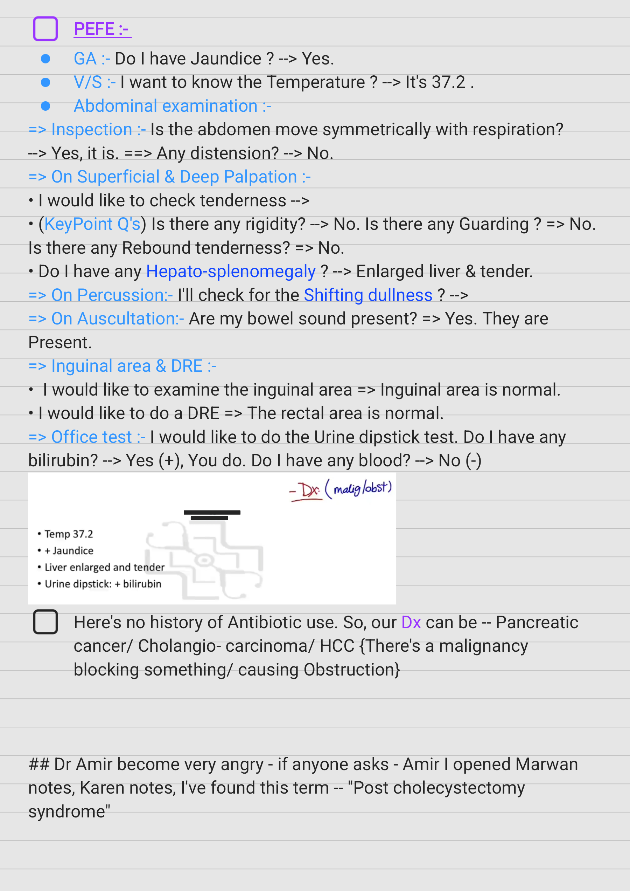

Source: Dr. Amir workshop — GIT 2026 / class 5 liver cases (Aug 2026 drop) · Specialty: gastroenterology
Dark urine can arise from liver/biliary disease, kidney/urinary tract disease, or from rhabdomyolysis and haemolysis.
Single best early differentiator - pale stools:
This is described as one of the more confusing but high-yield AMC pairs, with both renal and hepatobiliary versions examined.
Task: Take history (4 min), ask examiner for examination findings, explain diagnosis and differentials.
Explore the complaint (CCVO): Character (Coca-Cola/brown/dark yellow; throughout stream vs beginning/end), Content (blood/clots), Odour, and Timing/onset, plus aggravating/relieving factors. Findings: cola-coloured, throughout the stream, few days, every void, not worsening.
Key point: pale stools? No. Quick rule-out of liver: any jaundice or itch? No - this closes the liver door and confirms a KUB case.
KUB differentials screened:
Examination (ask examiner): general appearance (pallor, jaundice, oedema); vitals (temperature, BP - hypertension in renal disease); abdomen (inspection, palpation, ballot the kidneys, palpate bladder, renal angle tenderness, bowel sounds); inguinal region and DRE; urine dipstick.
Findings: BP 150/90, no jaundice, no organomegaly, no ballotable mass, no renal angle tenderness; urine dipstick blood positive, protein negative, bilirubin negative.
Nephritic vs nephrotic: nephritic = haematuria, hypertension, less oedema; nephrotic = heavy proteinuria, oedema, hypoalbuminaemia.
Diagnosis: IgA nephropathy. The differentiating feature from post-streptococcal glomerulonephritis (PSGN) is timing: IgA nephropathy produces haematuria within a few days of an upper respiratory infection (synpharyngitic), whereas PSGN follows 2-3 weeks after infection. IgA nephropathy is commoner in adults; PSGN is commoner in children.
History: explore dark urine (CCVO, timing); sore throat 2 weeks ago - did she see a GP, receive antibiotics? Key point: pale stools present - a liver case. Quick KUB exclusion (dysuria, fever, leg swelling, trauma - all negative).
Liver screen: cancer red flags (weight loss, appetite, lumps, tiredness, family history); hepatitis symptoms (jaundice yes, itch yes); risk factors (ABP FIT NO SEX) - she took Augmentin (amoxicillin-clavulanate)/amoxicillin for the sore throat; gallbladder (fatty-food pain, previous episodes); surgery; cholangitis (fever - none).
Examination: jaundice, tender enlarged liver (hepatomegaly), RUQ tenderness without peritonism; urine dipstick bilirubin positive, blood negative.
Diagnosis: antibiotic-induced (cholestatic) hepatitis - the antibiotic has caused cholestasis/liver inflammation. Bilirubin in urine indicates cholestasis (obstructive jaundice). Augmentin, flucloxacillin and dicloxacillin are recognised causes of cholestatic drug-induced liver injury.
History: pain assessment (SIQORAA) - epigastric, radiating to back, worse today, related to food; urine CCVO (tea-coloured, throughout stream, no blood); key point pale stools present. Quick kidney exclusion.
Liver/GB screen: weight loss 6 kg over 2 months (unintentional), family history (father colon cancer), jaundice, itch; previous cholecystectomy (gallbladder removed); no fever.
Examination: jaundice, temperature 37.2, enlarged tender liver, urine dipstick bilirubin positive, blood negative.
Diagnosis: obstructive jaundice, most concerning for malignancy blocking the biliary tree (pancreatic cancer or hepatocellular carcinoma; cholangiocarcinoma less likely conceptually but still biliary). The term 'post-cholecystectomy syndrome' should not be used as a diagnosis; its differentials include biliary stricture, retained/new duct stones and malignancy.
Reasons: hepatitis picture (jaundice, dark urine, pale stool, pain) plus red flags (weight loss, family history of cancer).
History: 4 weeks of on/off epigastric pain radiating to back, related to eating; nausea without vomiting; fever; jaundice; dark urine and pale stools; weight loss; loss of appetite.
Examination: fever, jaundice, RUQ tenderness, scars of laparoscopic cholecystectomy.
Diagnosis: cholangitis - bacterial infection of the biliary tree - supported by fever, pain and jaundice (Charcot triad). Concern for underlying malignancy (pancreatic cancer, HCC, cholangiocarcinoma) causing obstruction.
Differentials: hepatitis (drug-induced, autoimmune, viral), cholangitis, cholecystitis, pancreatitis, PUD, GORD, ACS, pneumonia.

Reviewed by: history-taking-expert (Australian clinical supervisor) · fact-checked against the irStudy medical textbook RAG index.